Monastir
La cité du Ribat et de la Méditerranée
À propos de Monastir
Le Gouvernorat de Monastir est une région située sur la côte centrale de la Tunisie, dans la région du Sahel, connue pour être un pôle industriel, touristique et agricole. Son nom est dérivé du mot grec monasterion signifiant « cellule d'ermite, monastère ».
Emplacement
Monastir est une presqu'île entourée par la mer Méditerranée sur trois côtés. Elle est située dans le Sahel tunisien, à environ 165 kilomètres au sud de la capitale, Tunis. La région forme, vers le sud, le golfe de Monastir, qui s'étend jusqu'au cap de Ras Dimass.
Histoire
L'histoire de Monastir remonte à l'Antiquité, sous le nom punique de Rous Penna que les Romains ont transformé en Ruspina. Jules César y a établi son camp de base avant sa victoire sur Pompée. La ville a connu de nombreuses civilisations et a été un lieu stratégique important, notamment avec la construction de nombreux ribats (forteresses militaires à vocation religieuse) dès la fin du VIIIe siècle. Le plus célèbre de ces édifices, le Ribat de Monastir, est un majestueux bâtiment avec des remparts crénelés qui domine la ville.
Caractéristiques
- Capitale Touristique et Industrielle : Bien que l'agriculture y soit présente, notamment avec des zones irriguées, Monastir est surtout reconnue pour son essor touristique et comme un important pôle industriel (textile, chimie, agroalimentaire).
- Patrimoine Architectural et Historique : La ville possède un riche patrimoine, incluant le grand Ribat, la Grande Mosquée (IXe siècle), le mausolée de la famille Bourguiba (lieu de sépulture de l'ancien président Habib Bourguiba, natif de la ville), et de coquets souks.
- Gastronomie Locale : Parmi les spécialités culinaires, on trouve le couscous accompagné de shirkaw, un petit poisson pêché localement pendant la saison estivale. On peut aussi y trouver des fromages artisanaux de qualité produits localement.
Top Places à Visiter
1.Ribat de Monastir
L'un des monuments historiques les plus emblématiques de la ville. Cette forteresse côtière du VIIIe siècle, bien préservée, abrite aujourd'hui un musée d'art islamique. Vous pouvez monter au sommet de sa tour de guet pour des vues imprenables sur la ville et la mer.
.jpg)
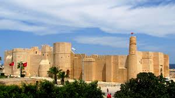
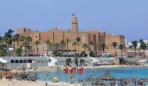
2.Mausolée de Habib Bourguiba
Un mausolée opulent et impressionnant, lieu de repos de l'ancien président tunisien Habib Bourguiba et de sa famille. L'architecture est magnifique, avec des dômes dorés et des minarets jumeaux, et l'entrée est gratuite.
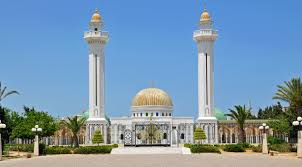
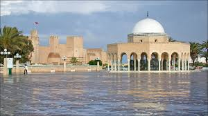
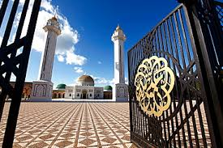
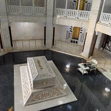
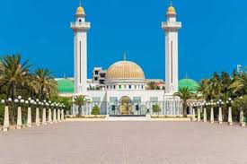
3.Médina de Monastir et Grande Mosquée
Promenez-vous dans les souks de la médina et visitez la Grande Mosquée, un bel exemple d'architecture islamique avec ses mosaïques dorées et ses piliers de marbre rose.
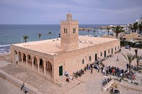
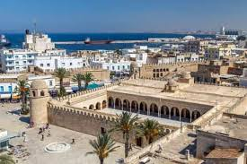
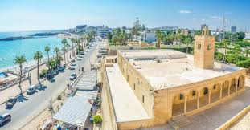
4.La Marina de Monastir
Idéale pour une promenade tranquille au bord de l'eau, elle offre de belles vues et est entourée de divers cafés et restaurants.
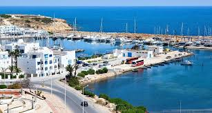
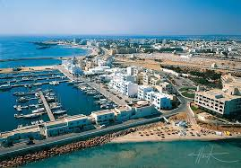
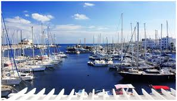
5.Plages de Monastir
Profitez des belles plages de sable blanc pour vous détendre et nager dans les eaux turquoise.
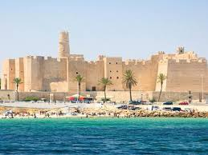
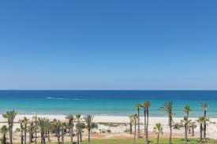
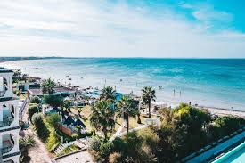
- La Luce: Un restaurant italien et américain très apprécié, connu pour ses plats délicieux.
- Restaurant Le Pirate: Spécialisé dans les fruits de mer et la cuisine française, il est souvent cité comme l'un des meilleurs restaurants de fruits de mer de Monastir.
- Marina the Captain : Propose une cuisine française et internationale, les clients apprécient particulièrement les plats de viande et l'ambiance.
- kavos coffee : Un café très bien noté, apprécié pour ses cafés bon marché et délicieux, ses milkshakes, ses pâtisseries et son atmosphère conviviale avec des jeux de société.
- COCOON resto et cafe (My Cocoon): Un endroit propre et accueillant, idéal pour prendre un café ou un repas.
- Heritage Coffee Shop : Recommandé pour son ambiance chaleureuse et son excellent café.